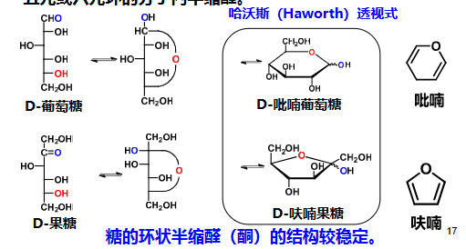
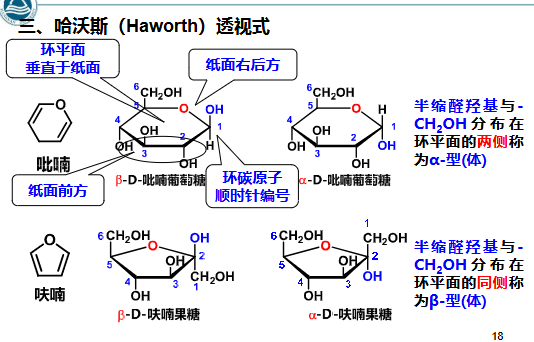
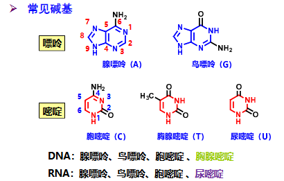
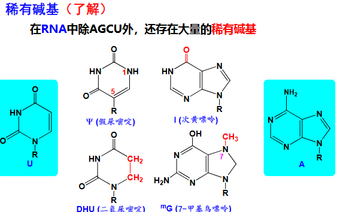
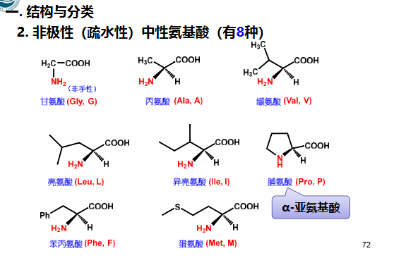
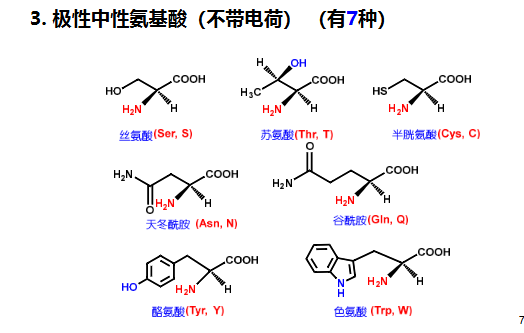
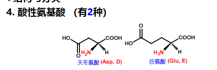
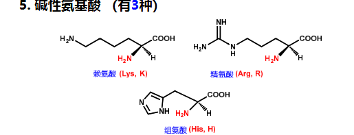
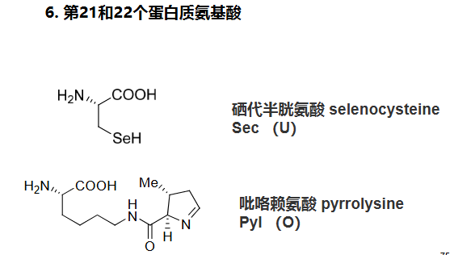

有机化学11 生物大分子-1.pdf 有机化学11 生物大分子-2.pdf
单糖
- 定义：糖类是多羟基醛或多羟基酮，以及通过水解就 能产生这些醛、酮的物质
- 分类：
- 单糖：不能再被水解成 为更小的糖分子 的糖类
- 寡糖：(低聚糖) 由2-9个 单糖分子失水而成 的糖类
- 多糖：由十个以上甚至 是几百、几千个 单糖分子失水而 成的糖类
- 最简单的糖：甘油醛
- 甘油醛的羟基在右边：D-(+)-甘油醛 构型标记
- 甘油醛的羟基在左边：L-(-)-甘油醛
- 单糖的D,L标记法：以离醛酮基的最远的手性碳的D/L为主，比如对于Glc 糖：最远的是，所以的D/L就是葡萄糖的D/L
- 差向异构体：含有多个手性碳原子的非对映体，彼此间仅有一个手性碳 原子的构型不同，其余的都相同，彼此称为差向异构体，eg:Glc的为DLDD和LLDD是一对差向异构体
- D-糖为主要自然界的糖类
- D-Glc=DLDD
- D-Gal=DLLD
- D-Fru=D(C=O)LDD
- D-Rib=DDD
- Glc的特性：
- 仅仅与1equiv. MeOH缩合
- 和某些加成试剂不反应，比如
- 有变旋现象
- 表明：已经是半缩醛
- 环状结构：糖的醛酮基和羟基在分子内亲核加成 加成 形成分子内半缩醛
- Haworth透视式：

- 画法：环碳原子顺时针编号

- 注意：画Haworth式的时候，把的除了骨架的剩下三个基团旋转，使得-OH在最底下，比如D-Glc的羟甲基转到了左边，倒下来就是在环上方，而的-OH在下方，所以是α-型
- 半缩醛羟基和分布在环平面两侧的叫α-型体，分布在同侧的叫β-型体 立体选择性
- 在水溶液中，Glc的α-型体和β-型体能通过开链互变并建立平衡
- 与Fischer投影式的关系：L=上 D=下
- 环状结构产生翻环等异构：因为e键比a键稳定，所以β-(4e+1e)型比α-(4e+1a)型稳定，含量更高 立体选择性
- 碱性条件下，会形成烯二醇中间体，使得出现差向异构转化，所以对糖的反应要在酸性/中性环境下进行 控pH反应
- Haworth透视式：
反应
- 氧化 氧化：Tollen和Fehling试剂 人名反应
- 酮不和这两个反应，但是在碱性条件下差向异构能生成醛基，所以重新能反应 控pH反应
- 和溴水反应 氧化：溴水能氧化醛基为羧基，不能氧化酮，所以可以用溴水鉴别醛糖和酮糖，生成的羧酸会分子内酯化形成δ-内酯
- 和稀硝酸 氧化：稀硝酸会氧化醛基和的生成二羧酸；酮糖的键会断裂，生成小分子二酸
- 氧化 氧化：会把所有1~5的碳氧化成甲酸，留下末端的生成甲醛
- 还原 还原：催化氢化生成醇
- 成脎反应：1equiv. 糖和3equiv. 苯肼()反应，在糖的形成二苯腙（糖脎）
- 不同的糖，生成的糖脎一致，其不影响的构型 立体选择性
- 但是，不同糖反应时间不同，所以可以用来鉴别糖
- 苯肼只和糖的C-1和C-2成脎后，分子内氢键使其形成较为稳定的六 元环结构，从而糖的其他碳原子不再成脎
- 处于糖环上相距较近的邻二醇（或1,3-二醇）可与醛或酮生成环状的缩 醛或缩酮 反应
寡糖和多糖
二糖
- 蔗糖：无游离的半缩醛羟基，由α-D-吡喃Glc和β-D-呋喃Fru通过Glc的和Fru的通过糖苷键连接，可称作α-1,2-糖苷键或β-2,1-糖苷键
- 麦芽糖：存在半缩醛羟基，为α-1,4-糖苷键，如果两个Glc均是α-则叫做α-麦芽糖，如果右边的是β-则叫做β-麦芽糖
- 纤维二糖：纤维素水解的产物，存在半缩醛羟基，纤维二糖的两个都是β-Glc，通过β-1,4-糖苷键连接
- 乳糖：有半缩醛羟基，β-D-Gal和D-吡喃Glc通过β-1,4-糖苷键连接
- 环糊精：淀粉水解后的环状低聚糖，由6,7,8个D-吡喃Glc残基通过α-1,4-糖苷键连接，为外部亲水内部疏水的结构
多糖
- 因为M过大，所以整体不具备还原性和变旋现象
- 直链型通过α-1,4或β-1,4-糖苷键连接，支链通过α-1,6-糖苷键连接
- 直链淀粉遇变蓝，支链淀粉变红
- 纤维素：D-Glc以β-1,4-糖苷键相连
- 糖原：D-Glc通过α-1,4-糖苷键和α-1,6-糖苷键相连
核酸
- 戊糖：核酸的戊糖有β-D-Rib（组成RNA）和β-D-dRib（组成DNA），β-D-dRib是的-OH脱掉，成了H
- 核酸碱基：


- 核酸的磷酸基团是离子化的，所以带负电，核苷酸的极性：5’→3’
- AT间2个HB，CG间3个HB
氨基酸
- 天然氨基酸：约有300多种
- 蛋白质氨基酸：组成蛋白质的氨基酸，有20(22)种，其它氨基酸为 非蛋白质氨基酸
- 在离羧基的α-C上就叫α-氨基酸，除此之外还有β-氨基酸，γ-氨基酸等
- 蛋白质氨基酸除了甘氨酸外都为L型 立体化学 且蛋白质氨基酸都是α-氨基酸（氨基酸的L型：Fischer式的氨基在横向左边，羧基在上
- 分类：
- 非极性（疏水）中性：
- 甘氨酸，Gly，G
- 丙氨酸，Ala，A
- 缬氨酸，Val，V
- 亮氨酸，Leu，L
- 异亮氨酸，Ile，I
- 脯氨酸，Pro，P
- 苯丙氨酸，Phe，F
- 蛋氨酸，Met，M

- 极性中性：
- 丝氨酸，Ser，S
- 苏氨酸，Thr，T
- 半胱氨酸，Cys，C
- 天冬酰胺，Asn，N
- 谷酰胺，Gln，Q
- 酪氨酸，Tyr，Y
- 色氨酸，Trp，W

- 酸性：
- 天冬氨酸，Asp，D
- 谷氨酸，Glu，E

- 碱性：
- 赖氨酸，Lys，K
- 精氨酸，Arg，R
- 组氨酸，His，H

- 第21,22号：硒代半胱氨酸，Sec，U和吡咯赖氨酸，Pyl，O

- 非极性（疏水）中性：
- 化学性质：
多肽和蛋白质
- 寡肽：2~10个氨基酸残基；多肽：>10个
- 命名：从N端开始编号，到C端，假设氨基酸顺序是A氨酸，B氨酸，C氨酸，就叫ABC肽，或者叫：γ-A酰B酰C氨酸
- 肽键的CO和会共振成-C=N-使得肽键六原子共面，且结构是trans.为主 立体选择性
- 活化羧基的活化试剂：DCC（二环己基碳二亚胺，强脱水剂）
- 固相合成：在不溶的高分子树脂的表面上进行接肽反应称为固相接肽，是一个重复添加氨基酸的过程
- 二级结构：α-helix, β-pleated sheet, β-turn, random coil 二级结构 立体化学
- 三级结构：单个多肽链在三维空间中的完整折叠形态，由二级结构元件（α-螺 旋、β-折叠等）的进一步排列与相互作用形成，呈现特定的空间构象
- 四级结构：四级结构：多个独立折叠的多肽链（亚基）通过非共价相互作用组装形成的复 合体结构，仅存在于多亚基蛋白质中